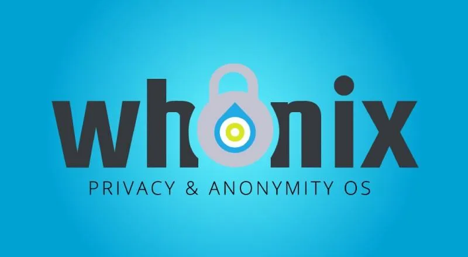
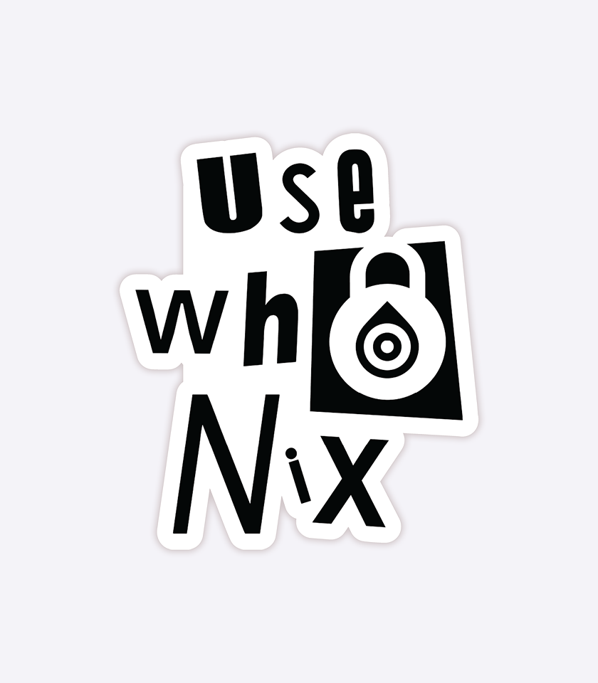
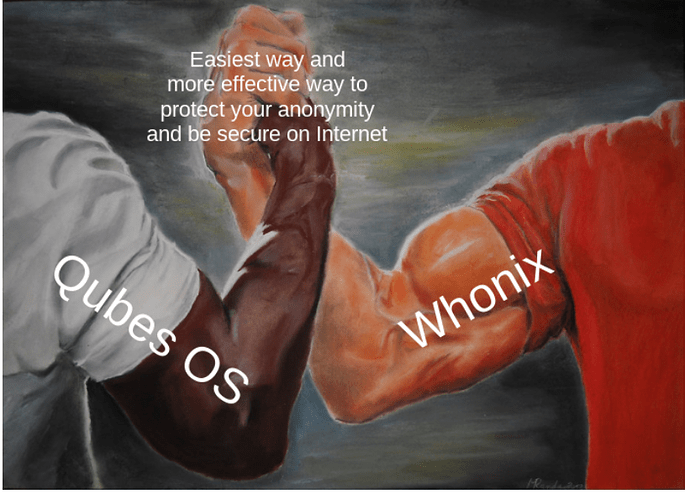

Community contributed Whonix artwork.
Artwork
Figure: Whonix Ambient Advertising by Amanda Torres [1]

Figure: Whonix Logo with woman hand typing by chuzhoy007
Figure: Whonix Logo on face mask by CountryYak

Figure: Whonix Logo sticker on bottle by CountryYak

Figure: Whonix Whonix main logo with laptop running whonix by Joerg Geiger

Figure: Old Whonix Logo ASCII art old whonix-welcome-page screenshot

File:whonix_prole_hacker.jpg|A relatively anonymous proletarian hacker using Whonix. Created with AI (Flux Schnell) ...I'm not able to add images ("You do not have permission to create new pages"), someone upload this from imgtree if you please)
Logo Contest Submissions
Figure: ''Whonix 2020 Logo Contest!
![[https://forums.whonix.org/t/whonix-2020-logo-contest/9982/2 Whonix logo by nodeguy]](../media/Whonix_contest_by_nodeguy.png.webp) Whonix
logo by
nodeguy
Whonix
logo by
nodeguy Whonix
logo by
anon1344380
Whonix
logo by
anon1344380 Whonix
banner by
anon1344380
Whonix
banner by
anon1344380![[https://forums.whonix.org/t/whonix-2020-logo-contest/9982/5 Whonix ''owl'' logo by Owlnonymous]](../media/Whonix_-_1000x1000_Rebranded_Owlnonymous_1-1_ratio.png.webp) Whonix
''owl'' logo by
Owlnonymous
Whonix
''owl'' logo by
Owlnonymous![[https://forums.whonix.org/t/whonix-2020-logo-contest/9982/5 Whonix ''owl'' banner by Owlnonymous]](../media/Whonix_-_1500x500_Rebranded_Owlnonymous_1-3_ratio_-_A.png.webp) Whonix
''owl'' banner by
Owlnonymous
Whonix
''owl'' banner by
Owlnonymous![[https://forums.whonix.org/t/whonix-2020-logo-contest/9982/5 Whonix ''owl'' logo by Owlnonymous]](../media/Whonix_-_1500x500_Rebranded_Owlnonymous_1-3_ratio_-_B.png.webp) Whonix
''owl'' logo by Owlnonymous
Whonix
''owl'' logo by Owlnonymous
Community Created Alternative Logos
  ''Whonix Main Logo
FossTorrents'' logo by Free Open-Source Project
Torrents
''Whonix Main Logo
FossTorrents'' logo by Free Open-Source Project
Torrents![[https://www.hostingadvice.com/blog/whonix-os-is-preserving-internet-anonymity/ ''Whonix Hosting Advise'' logo by Christine Preusler from Hosting Advise]](../media/HostingAdvise-Whonix.jpg.webp) ''Whonix
Hosting Advise'' logo by Christine Preusler from Hosting
Advise
''Whonix
Hosting Advise'' logo by Christine Preusler from Hosting
Advise ''Whonix
main logo green'' by Effect
Hacking
''Whonix
main logo green'' by Effect
Hacking Illustration
of a shield integrating binary code, representing protection and digital
nature, with 'Whonix' written across the shield in sleek silver by
DALL·E
Illustration
of a shield integrating binary code, representing protection and digital
nature, with 'Whonix' written across the shield in sleek silver by
DALL·E Oil
painting style logo with a stylized owl, representing wisdom and
privacy, with its wings spread wide, and the word 'Whonix' inscribed
beneath by
DALL·E
Oil
painting style logo with a stylized owl, representing wisdom and
privacy, with its wings spread wide, and the word 'Whonix' inscribed
beneath by
DALL·E WX
onion shield logo. Created with AI (Flux
Schnell)
WX
onion shield logo. Created with AI (Flux
Schnell) Whonix
silhouette logo. Created with AI (Flux Schnell)
Whonix
silhouette logo. Created with AI (Flux Schnell)
Logo History
Figure: Stylized Project Logo History (more versions on Dev/Logo)
 TorBOX
logo
TorBOX
logo aos
logo
aos
logo Whonix
old Logo Refinement
2021
Whonix
old Logo Refinement
2021 Whonix
Banner until 2021 Whonix Banner until
2021
Whonix
Banner until 2021 Whonix Banner until
2021 Whonix
Logo since 2022 Whonix Logo since
2022
Whonix
Logo since 2022 Whonix Logo since
2022 Whonix
Banner since 2022 Whonix Banner since 2022
Whonix
Banner since 2022 Whonix Banner since 2022
Banner Collection
Figure: Whonix 10 years celebration banner

Figure: Whonix banner

Figure: Whonix 14 years celebration banner

Figure: Whonix Whonix Anonymity Tips banner

Figure: Whonix Live Mode

Figure: Whonix Developers Wanted

Illustrative Images
Technical Illustrations
Figure: Whonix Concept Detailed Technical Illustration

Figure: ''Whonix connecting to internet through Tor by Eloy
[to internet through Tor by Eloy]
Figure: Whonix Concept Illustration

Figure: Whonix Operating System Design

Figure: Isolated Routes

Figure: Whonix Stream Isolation

Figure: Whonix Stream Isolation Remodeled

Figure: Whonix Connection With Vanguard Logo

Figure: Whonix Whonix Connection Without Vanguard Logo

Figure: Whonix Whonix vs VPN Logos In The Middle

Figure: Whonix Whonix vs VPN Logos On The Left

Figure: Whonix Whonix Connection technical

Figure: Whonix Whonix vs VPN technical|Whonix Whonix vs VPN technical

Conceptual Illustrations
Figure: Whonix Homepage Main by Hans

Figure: Whonix Principle Overview by @p41NpkH3 [2]


Figure: ''Whonix Principle Overview by glenn sorrentino '

Figure: ''Whonix on windows 10 by Eloy

Figure: Whonix Principle Overview

Figure: Whonix Principle Overview Notebook

Figure: Whonix Principle Homepage Preview

Features Screenshots
Figure: Elite Spy Defense


Figure: Maximum Anonymity


Figure: 10 Years of Success


Figure: Cyber Security Best Practices


Figure: Bulletproof IP Protection


Figure: Cloaking your typing style


Figure: Time Attack Protection


Figure: Not even WE know


Figure: The Everything Tor OS


Figure: Virtualizer friendly

Figure: Anonymous Web Server

Figure: Kernel Self Protection Settings


Figure: Tor Browser


Figure: Live Mode


Figure: Based on Linux


Figure: Onion Website Option


Figure: Advanced Firewall


Figure: Android App Support


Figure: Virus Protection


Figure: Brute Force Defense


Figure: Risk Minimization


Figure: Discovery/Traffic Analysis Attack Protection


Figure: Strong Linux Account Separation


Figure: Strong Anonymity, privacy and security settings


Figure: Extensive Documentation


Figure: Vibrant Community


Figure: Console Lockdown


Figure: Swap File Creator


Figure: CPU Information Leak Protection (TCP ISN)
_1.png.webp)
_2.png.webp)
Figure: Hosting Location Hidden Services


Figure: Tor Connection Destination Viewer (tor-ctrl-observer)
_1.png.webp)
_2.png.webp)
Figure: Warrant Canary


Figure: Based on Debian


Figure: Digitally Signed releases


Memes
![[https://forum.qubes-os.org/t/memes-about-qubes-os/4422/16 by quququbebebe]](../media/qubesos_dispvm_whonix_meme1.png.webp) by
quququbebebe
by
quququbebebe
YouTube thumbs
Video 003 : What is Whonix? - Your Internet Privacy Super Tool

{kind=link}

See Also
Footnotes
- https://twitter.com/Whonix/status/1482417538780868615
- * broken link: https://twitter.com/p41NpkH3 * broken link: https://twitter.com/p41NpkH3/status/1499489832783036428